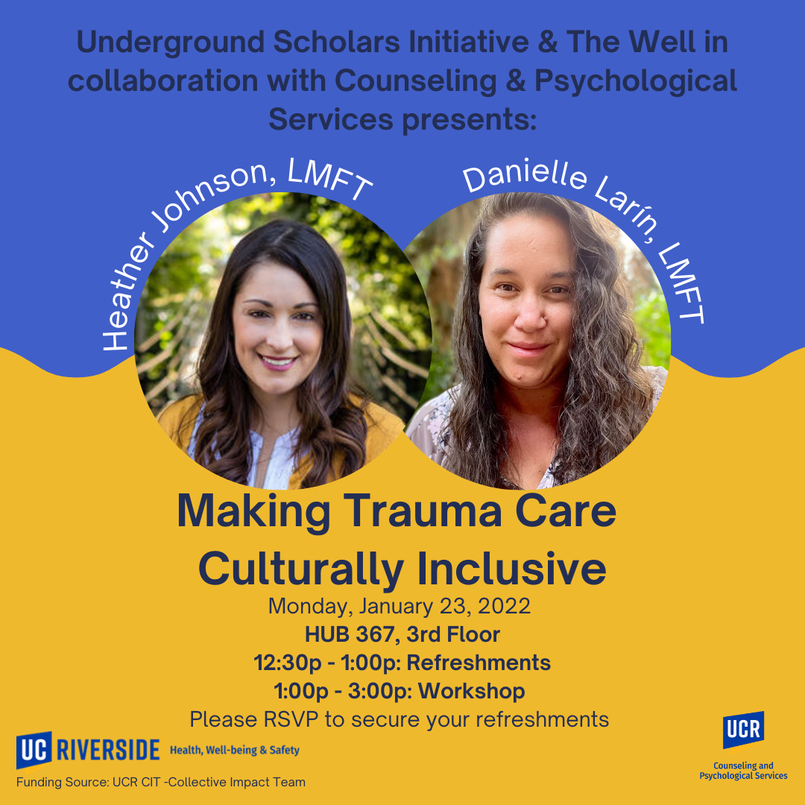
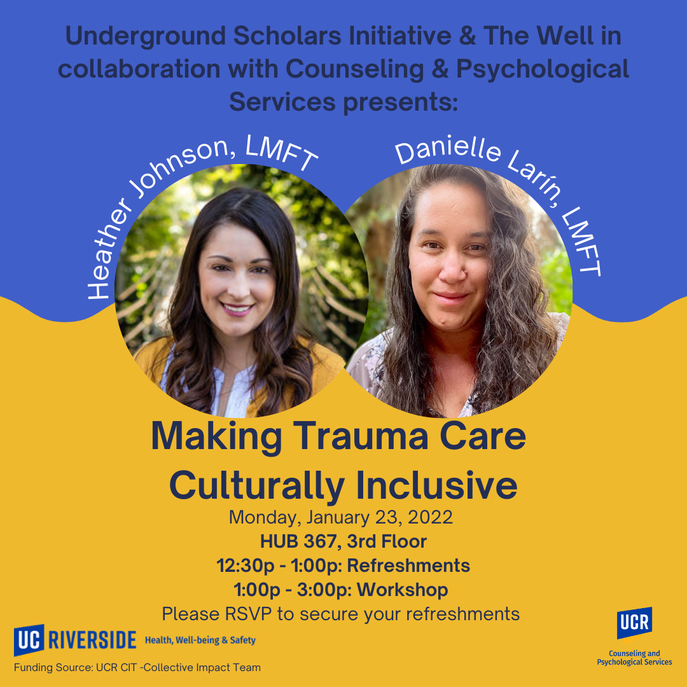

Alyssa Rodriguez
Enter bio here
Enter bio here
As a student finishing her Psychology Law and Society major with experience as a Committee Chair and Policy Organizer, I know I can quickly use my skill set and knowledge to become a valuable member of Susan B. Komen.
I am the right candidate for this role because I have the skills to support Komen’s research advocacy and assist in leading committees through detailed planning. In addition, I have done policy advocacy work within my leadership roles and volunteer roles in other non-profits that have been passed and signed into legislation by Governor Newson. With these roles, I have obtained the skills of advocacy and community building. I understand the power of grassroots advocacy at the non-profit level. As a Committee Chair at the Univesity of California Riverside, I lead over 20 committees through agenda planning to decide the decisions relating to misconduct of the Student Conduct policies. Because of these reasons, I am confident that I can have an effect on Susan. G Komen.
Experience
Lead Researcher
• Conducted evidence-based primary research through deep knowledge of student-centric design, developmental psychology, and school community concerns for district-wide implementation
• Interviewed 10+ founders, principals, and executive directors on their successful methodology and implementation strategies in transforming the K-12 educational system to become more trauma-informed
• Consulted with the Executive Director and stakeholders to ensure consistent development of modeled programs and training for school district staff by providing team support and direction
Education
Portfolio


